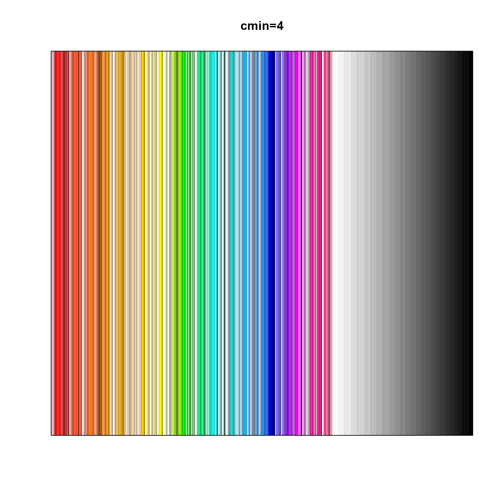
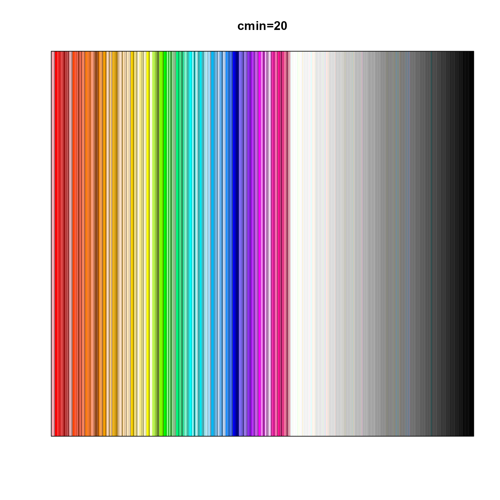
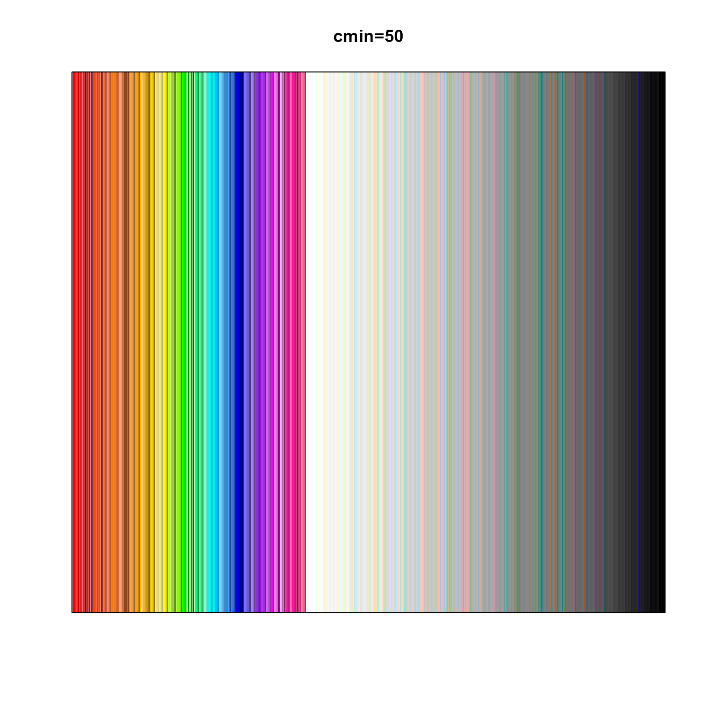

Sort colors (deprecated)
sort_colors_deprecated(
x,
sort_by = c("h", "-c", "-l"),
c_min = 4,
grey_hue = 359,
hue_offset = 0,
...
)This function is deprecated, please use colorjam::sort_colors().
This function is intended to be a very rapid method to sort colors, based upon hue, then chroma descending, then luminance descending.
x <- jamba::nameVector(colors());
## Basic color sort
c2 <- sort_colors_deprecated(x);
jamba::showColors(c2, main="cmin=4");

## Increase filtering of unsaturated colors
c3 <- sort_colors_deprecated(x, c_min=20);
jamba::showColors(c3, main="cmin=20");

## Increase filtering of unsaturated colors
c4 <- sort_colors_deprecated(x, c_min=50);
jamba::showColors(c4, main="cmin=50");
